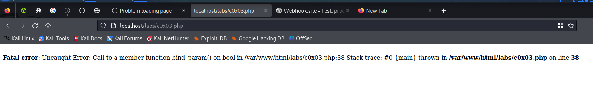

Ultimate Goal Is trigger something as :
whoami and prove that we have code execution
if want to take one step further and pop a shell that is great to
Don't forget to read the error msg carefully
The third payload worked from the Appsec notes
Commenting out the rest of a command; ls -la #
Got the error when i was running this command:awk 'BEGIN {print sqrt(((100-100)^2) + ((200-500)^2))}'whoami

Will simply run the test data to see what's happening
So we should target the Position Y box

Command in Position Y : 10)^2))}';whoami;
But as we can see that we din't got the result

Will run this command: 10)^2))}';whoami;#
as we have added the # in the end if there is anyerror it would get resolve as no command will get exceuted after the # command

So it's a basic injection let see if we can pop a shell out of this